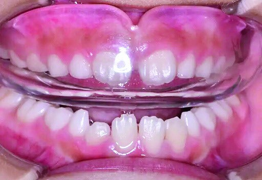

孩子下排牙齒咬在上排牙齒外側，常被稱為反咬合、錯咬或戽斗。若與上顎生長不足有關，醫師可能在乳牙或混合齒列階段評估使用上顎前導矯正裝置，利用成長期協助建立較合適的上下顎關係。
早期介入的目的不是保證未來不需要矯正，而是把握顎骨仍在發育的時期，降低反咬合持續惡化及日後治療複雜度。是否適合仍需由齒顎矯正醫師檢查齒列、咬合與顎骨生長方向。
1. 什麼是上顎前導矯正裝置？
本篇介紹的 MUH functional appliance 是日本製的活動式肌功能矯正裝置，由柳澤宗光醫師於 1984 年在日本發表推廣。裝置利用口腔周圍肌肉與舌頭的功能，引導上顎向前生長，主要治療目標是改善兒童反咬合。
活動式裝置可以自行取下，但療效高度仰賴孩子每天穩定配戴。醫師會依反咬合程度、顎骨生長型態與配合度安排回診追蹤。

2. 適合的年齡與治療時機
上顎前導治療通常著重於顎骨仍有生長潛力的乳牙與混合齒列階段。教材整理的齒列時期如下：
全乳牙齒列
約 3–6 歲。若已出現明顯反咬合，可由醫師評估是否適合早期介入。
混合齒列
約 6–12 歲。乳牙與恆牙交替期間仍可評估顎骨前導與咬合調整。
恆牙齒列
12 歲以上通常建議評估一般全口矯正療程，實際方案依齒列與骨骼條件決定。
3. 每天需要配戴多久？
每日 10–14 小時
建議以夜間配戴為主。若孩子一開始無法整夜使用，可先在白天逐步訓練，再慢慢增加配戴時間。
初期痠痛屬常見適應反應
配戴時口腔周圍肌肉、舌頭與頦部可能痠痛，類似運動後的肌肉痠痛，通常會隨配戴時間增加而逐漸減輕。若疼痛明顯、持續或裝置壓傷黏膜，應回診檢查。
改善速度因人而異
教材指出治療時間可能從 2 個月到 9 年不等，平均約 6–7 個月可見反咬合改善；實際進度會受到生長型態、嚴重程度與配戴配合度影響。
4. 反咬合改善後如何維持？
咬合修正完成後仍需要追蹤，因為孩子的顎骨與齒列還在生長。若咬合尚不穩定，教材建議持續配戴至接近成年；參考年齡為男性約 17.5 歲、女性約 16.5 歲。
若咬合已較穩定，可在醫師指示下逐漸降低配戴頻率，並持續維持約一年。請勿自行停戴，回診時醫師會依咬合接觸與顎骨生長狀況調整。
5. 療程限制與注意事項
無法同時解決所有齒列問題
上顎前導裝置主要改善反咬合，不能同時處理明顯牙齒凌亂、擁擠或雙顎前突。這些問題通常需在恆牙齒列階段另行評估全口矯正。
治療結果存在個體差異
顎骨生長方向與反咬合成因不同，少數個案可能無法完全改善。即使如此，早期前導仍可能降低日後全口矯正或正顎治療的複雜度。
孩子的配合度很重要
若未能依指示配戴，效果可能不如預期。裝置不用時應清潔後放入專用盒，避免高溫、遺失或寵物咬壞；遺失或損壞重新製作將另計費用。
反咬合可能來自牙齒位置，也可能與上下顎骨生長有關。治療前需先辨別原因；即使早期改善，仍應定期追蹤到生長較穩定，才能及時調整後續矯正計畫。